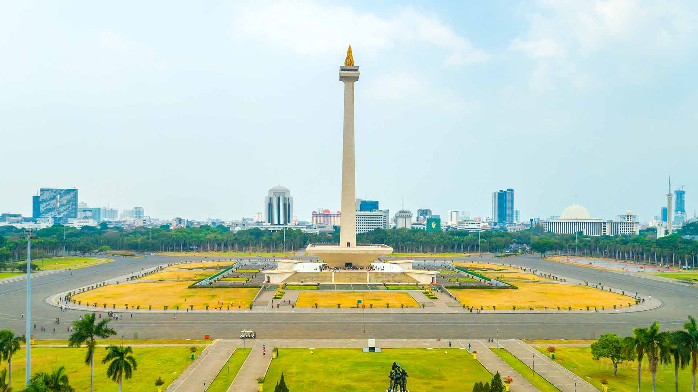
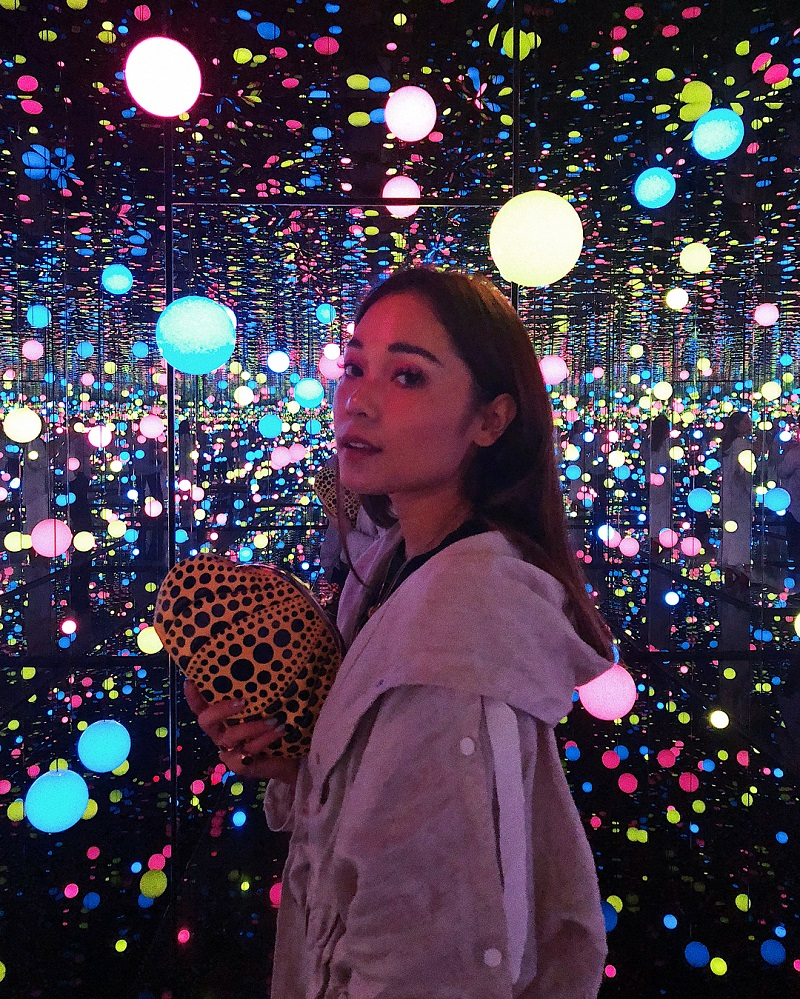
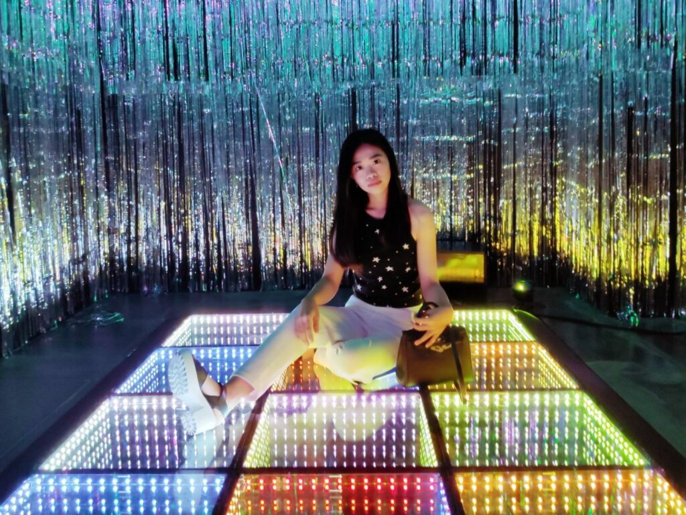
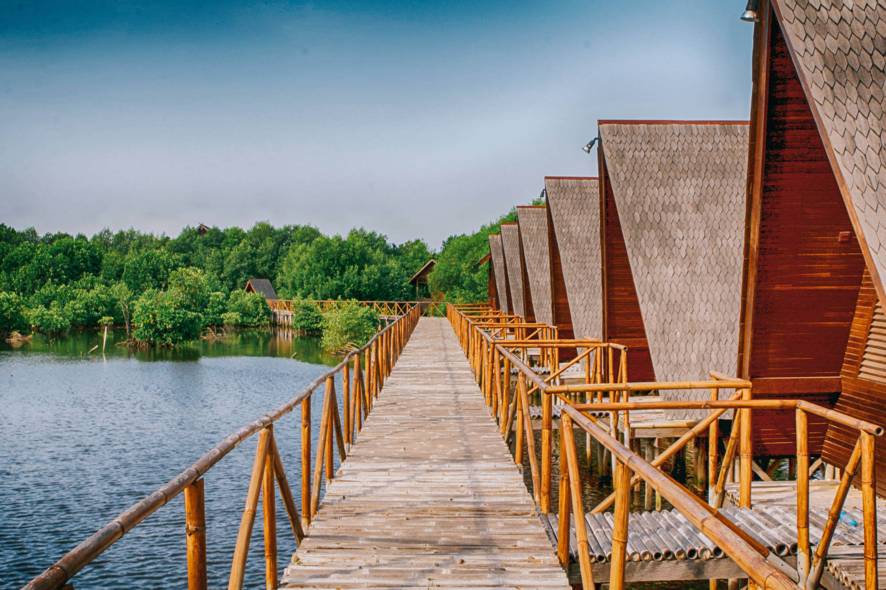

Daftar Wisata Jakarta
| Foto Lokasi | Alamat | Waktu operasional | Rating |
|---|---|---|---|
Taman Mini Indonesia Indah  |
JL. Raya Taman Mini, Jakarta Timur Daerah Khusus Ibukota Jakarta, Indonesia |
Setiap Hari
06.00-22.00 |
7/10 |
Monumen Nasional  |
Gambir, Kecamatan Gambir, Jakarta Pusat Daerah Khusus Ibukota Jakarta, Indonesia |
Setiap Hari
08.00-22.00 |
6.5/10 |
Museum Macan  |
AKR Tower, Jl. Perjuangan No.5, RT.11/RW.10, Kb. Jeruk, Kec. Kb. Jeruk,Jakarta Barat Daerah Khusus Ibukota Jakarta, Indonesia |
Selasa - Minggu
10.00-16.00 |
7.5/10 |
Moja Museum  |
Komplek Gelora Bung Karno, Main Stadium, Jl. Gerbang Pemuda No.1, RT.1/RW.3 Daerah Khusus Ibukota Jakarta, Indonesia |
Setiap Hari
11.00-19.30 |
7.5/10 |
Pantjoran Chinatown PIK 2  |
Jalan Pantai Indah Kapuk 2 , Jakarta Utara Daerah Khusus Ibukota Jakarta, Indonesia |
setiap Hari
16.00-24.00 |
7/10 |
Sky Rink Jakarta  |
Mall Taman Anggrek, Lantai 3, RT.12/RW.1, Tj. Duren Sel., Kec. Grogol petamburan,Jakarta Barat Daerah Khusus Ibukota Jakarta, Indonesia |
setiap Hari
11.30-21.00 |
8/10 |
Jakarta Aquarium  |
Jl. Letjen S. Parman No.106, RT.3/RW.5, Tj. Duren Sel., Kec. Grogol petamburan, Jakarta Barat, Daerah Khusus Ibukota Jakarta, Indonesia |
setiap Hari
10.00-21.00 |
8/10 |
Taman Wisata Alam Mangrove  |
Jl. Garden House No.4, RT.8/RW.3, Kamal Muara, Kec. Penjaringan, Jakarta Utara, Daerah Khusus Ibukota Jakarta, Indonesia |
setiap Hari
08.00-17.00 |
6.5/10 |
Kidzania  |
Pacific Place, Jl. Jenderal Sudirman No.Kav. 52-53, RT.5/RW.3, Senayan, Kec. Kby. Baru, Jakarta Selatan, Daerah Khusus Ibukota Jakarta, Indonesia |
setiap Hari
10.00-17.00 |
8.5/10 |
Taman Lapangan Banteng  |
PaRRHP+Q2F, Ps. Baru, Kecamatan Sawah Besar,Jakarta Pusat Daerah Khusus Ibukota Jakarta, Indonesia |
setiap Hari
10.00-17.00 |
8/10 |